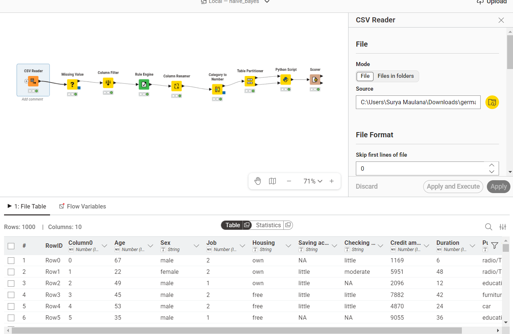
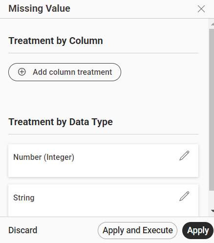
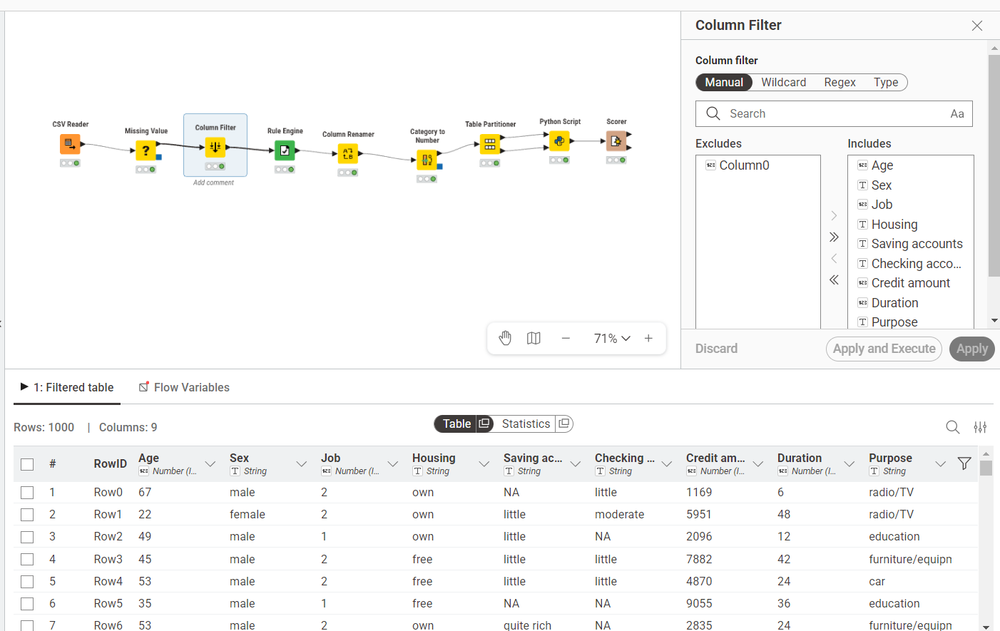
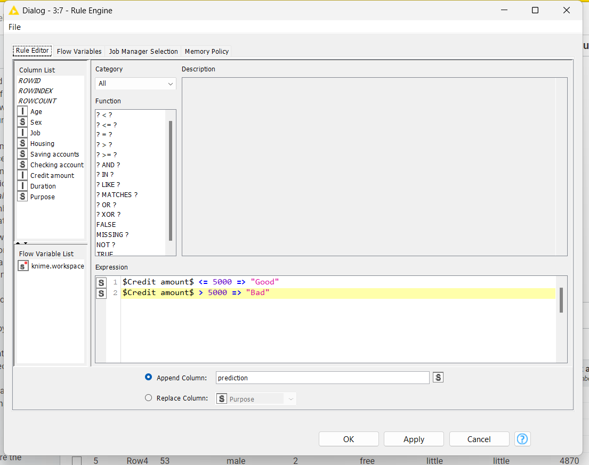
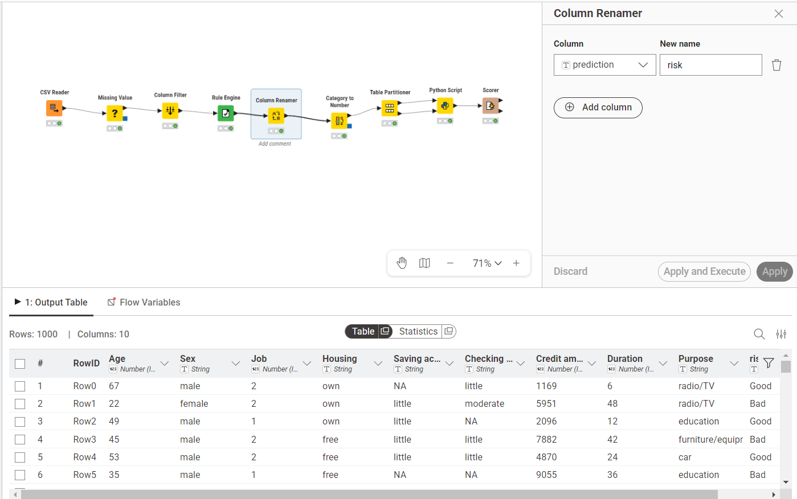
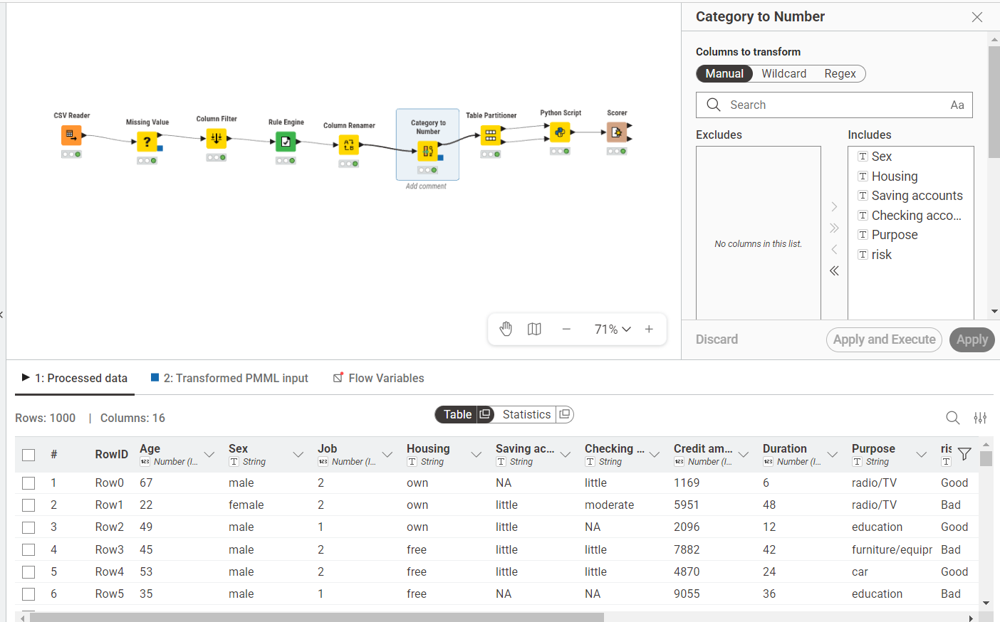
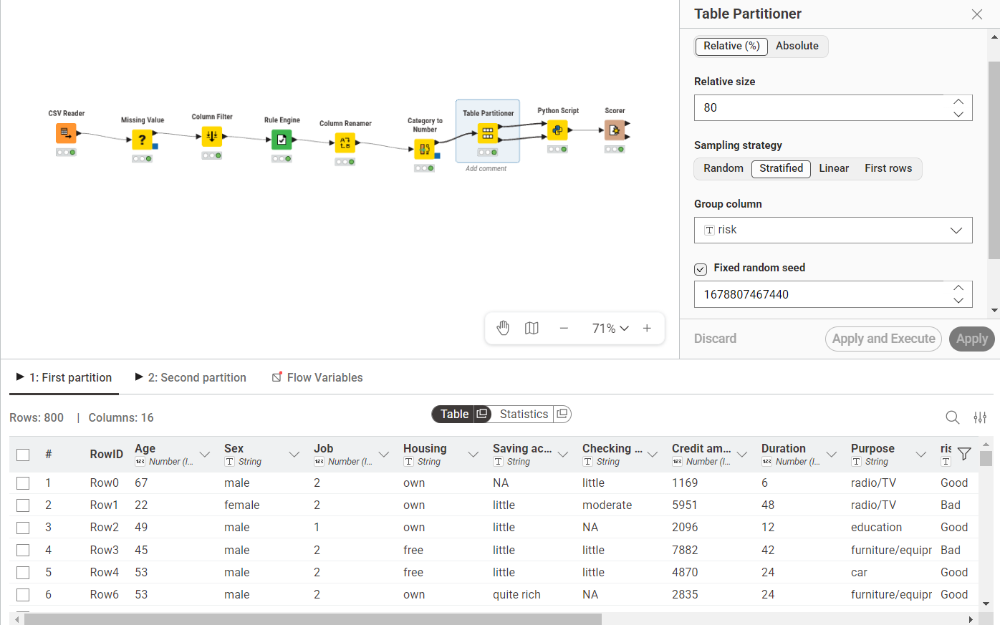
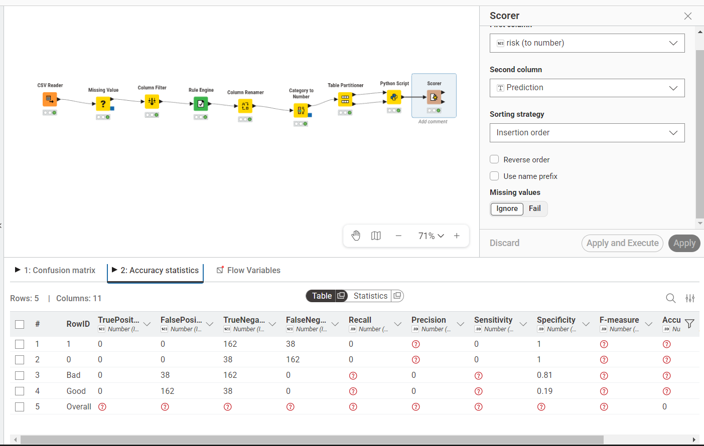

Analisis Klasifikasi Menggunakan Gaussian Naive Bayes#
1. Pendahuluan#
Pada penelitian ini dilakukan analisis klasifikasi untuk menentukan kelayakan kredit (risiko kredit) seseorang menggunakan algoritma Naive Bayes, khususnya Gaussian Naive Bayes.
Permasalahan ini termasuk dalam kategori supervised learning, di mana model dilatih menggunakan data yang telah memiliki label (kelas/target) untuk memprediksi label pada data baru.
Metode Naive Bayes dipilih karena:
Cepat, sederhana, dan powerful dalam klasifikasi.
Sangat efisien untuk dataset berdimensi tinggi.
Berbasis probabilitas sehingga proses dan hasilnya lebih mudah diinterpretasikan.
2. Dataset#
Dataset yang digunakan dalam studi ini adalah German Credit Dataset.
Link Dataset: German Credit Data Kaggle atau UCI Machine Learning Repository.
Karakteristik Data:#
Jumlah Sampel: 1000 Baris data nasabah
Fitur: Terdapat 20 fitur (sebelum filter/preprocessing)
Tipe Data:
Numerik (misal:
Age,Credit Amount,Duration)Kategorikal (misal:
Job,Housing,Saving accounts,Checking account)
Target / Kelas (
Risk):Good (Aman/Layak diberikan kredit)
Bad (Berisiko tinggi menunggak)
3. Teori Dasar Naive Bayes#
Naive Bayes didasarkan pada Teorema probabilitas Bayes yang memiliki asumsi unik: asumsikan bahwa setiap fitur dalam data bernilai mandiri / mutually independent relatif terhadap targetnya.
Persamaan Dasar Teorema Bayes: $\( P(C|X) = \frac{P(X|C) \cdot P(C)}{P(X)} \)$
Keterangan:
\(P(C|X)\) = probabilitas kejadian suatu record data termasuk dalam kelas tertentu (C), jika diketahui profil ciri-cirinya (X).
\(P(X|C)\) = nilai likelihood, probabilitas profil ciri-ciri tersebut terjadi dalam lingkup data berkelas C.
\(P(C)\) = probabilitas prior dari sebuah kelas (berapa banyak kelas C tersebut pada dataset kita).
\(P(X)\) = probabilitas evidence atau bukti terjadinya.
4. Gaussian Naive Bayes#
Ketika digunakan pada data numerik kontinu, fitur data di asumsikan memiliki distribusi probabilitas normal (kurva Gaussian). Probabilitas dihitung dengan:
Penjelasan:
\(\mu\) (Miy) = Rata-rata dari nilai fitur \(x\) tersebut di suatu kelas.
\(\sigma^2\) (Sigma Kuadrat) = Variansi dari data fitur tersebut pada suatu kelas.
Formula ini berguna tanpa perlu melakukan pengelompokan (binning/discretization) yang kaku pada data bertipe numerik.
5. Perhitungan Manual Langkah-demi-Langkah#
Untuk memahami cara kerja Naive Bayes (khususnya untuk rasio data campuran Kategorikal dan Numerik), mari kita gunakan 5 baris pertama data sesungguhnya dari german_credit sebagai set pelatih (Training Set) dan baris ke-6 sebagai data Uji (Testing Data) yang tidak diketahui kelasnya.
Misi: Memprediksi nilai Risk data baru berdasarkan sampel yang ada. (Catatan: karena nilai Risk sesungguhnya di 5 baris pertama ini tidak langsung tertulis, kita akan mengasumsikan label Risk Good/Bad sebagai ilustrasi perhitungan di bawah).
5.1 Dataset Sampel (Training)#
No |
Age (Numerik) |
Sex (Kategorikal) |
Credit amt (Numerik) |
Risk (Target) |
|---|---|---|---|---|
0 |
67 |
male |
1169 |
Good |
1 |
22 |
female |
5951 |
Bad |
2 |
49 |
male |
2096 |
Good |
3 |
45 |
male |
7882 |
Good |
4 |
53 |
male |
4870 |
Bad |
Data Uji (Baris ke-5 dari dataset): Age = 24, Sex = male, Credit = 9055.
Apakah nasabah ini tergolong Risk Good atau Bad? Kita hitung dengan Naive Bayes.
5.2 Langkah 1: Menghitung Probabilitas Apriori / Prior \(P(C)\)#
Berapa bagian masing-masing kelas di dataset secara umum?
\(P(Good) = \frac{3}{5} = \mathbf{0.6}\)
\(P(Bad) = \frac{2}{5} = \mathbf{0.4}\)
5.3 Langkah 2: Menghitung Likelihood (Peluang Posterior per Fitur) \(P(X|C)\)#
Karena Naive Bayes mengasumsikan antar-fitur tidak saling memengaruhi, kita hitung parsial.
A. Fitur Kategorikal: Sex (male)
Peluang munculnya Sex = male apabila kelas targetnya adalah Good dan Bad:
\(P(Sex=male | Good) = \frac{3 \text{ pria di kelas Good}}{3 \text{ total nasabah Good}} = \mathbf{1.0}\)
\(P(Sex=male | Bad) = \frac{1 \text{ pria di kelas Bad}}{2 \text{ total nasabah Bad}} = \mathbf{0.5}\)
B. Fitur Numerik: Estimasi Parameter Age (Umur) & Credit Amount Kita gunakan Teorema Gaussian PDF. Diperlukan pencarian Mean (\(\mu\)) dan Variance (\(\sigma^2\)) untuk metrik dari Age berdasar kelasnya:
Tabel Distribusi Fitur Age:
Mean
AgeuntukGood: \(\mu_{age,Good} = \frac{(67+49+45)}{3} = 53.67\)Varians
AgeuntukGood: \(\sigma^2_{age,Good} = \frac{(67-53.67)^2 + (49-53.67)^2 + (45-53.67)^2}{3} \approx 91.56\)Mean
AgeuntukBad: \(\mu_{age,Bad} = \frac{(22+53)}{2} = 37.5\)Varians
AgeuntukBad: \(\sigma^2_{age,Bad} = \frac{(22-37.5)^2 + (53-37.5)^2}{2} = 240.25\)
Sekarang kita substitusikan data uji Age = 24 ke fungsi Distribusi Normal (Gaussian):
$\(P(Age=24 | Good) = \frac{1}{\sqrt{2\pi(91.56)}} \cdot e^{-\frac{(24-53.67)^2}{2(91.56)}} \approx \mathbf{0.00034}\)\(
\)\(P(Age=24 | Bad) = \frac{1}{\sqrt{2\pi(240.25)}} \cdot e^{-\frac{(24-37.5)^2}{2(240.25)}} \approx \mathbf{0.0176}\)$
5.4 Langkah 3: Menghitung Nilai Posterior Prediksi#
Kita akan mengalikan seluruh kemungkinan prior dan likelihood untuk data uji \(X_{baru} = \{Age=24, Sex=male\}\) (catatan: Perhitungan disederhanakan tanpa kolom credit amount demi keringkasan baris matematika).
Skor untuk Kelas Good: \(\text{Score}(Good) = P(Good) \times P(Sex=male|Good) \times P(Age=24|Good)\) \(\text{Score}(Good) = 0.6 \times 1.0 \times 0.00034 = \mathbf{0.000204}\)
Skor untuk Kelas Bad: \(\text{Score}(Bad) = P(Bad) \times P(Sex=male|Bad) \times P(Age=24|Bad)\) \(\text{Score}(Bad) = 0.4 \times 0.5 \times 0.0176 = \mathbf{0.00352}\)
5.5 Keputusan (Prediction)#
Karena \(\text{Score}(Bad) > \text{Score}(Good)\) yaitu \((0.00352 > 0.000204)\), model Naive Bayes akan mengklasifikasikan nasabah baru (Umur 24, Pria) tersebut sebagai Risk = Bad.
6. Tahapan Analisis (Penjelasan Workflow KNIME)#
Berikut adalah penjelasan ilmiah untuk masing-masing node sesuai workflow KNIME yang digunakan:
1️. CSV Reader#
Fungsi: Mengimpor dataset German Credit ke dalam KNIME.
Alasan penggunaan:
Dataset mentah berasal dari file
.csvSemua proses data mining dimulai dari tahap akuisisi data

2️. Missing Value#
Fungsi: Menangani nilai yang hilang (NA / null) pada dataset.
Alasan penggunaan:
Algoritma Gaussian Naive Bayes tidak bisa memproses data kosong
Missing value dapat menyebabkan error saat training dan bias pada model.
Strategi yang digunakan:
Numerik → Mean
Kategorikal → Most frequent (mode)

3️. Column Filter#
Fungsi: Memilih fitur yang relevan untuk analisis.
Alasan penggunaan:
Menghapus kolom yang tidak diperlukan (misalnya ID)
Mengurangi noise dalam data
Mempercepat proses training

4️. Rule Engine#
Fungsi: Membuat label target baru (risk) berdasarkan aturan:
$Credit amount$ <= 5000 => "Good"
$Credit amount$ > 5000 => "Bad"
Alasan penggunaan:
Dataset mungkin tidak memiliki label target yang terdefinisi sesuai batasan riset.
Dibutuhkan klasifikasi (Good / Bad) untuk supervised learning.

5️. Column Renamer#
Fungsi: Mengubah nama kolom (misalnya prediction → risk)
Alasan penggunaan:
Menyamakan nama kolom dengan kebutuhan model
Menghindari error di Python Script

6️. Category to Number#
Fungsi: Mengubah data kategorikal menjadi numerik.
Contoh: male → 0, female → 1
Alasan penggunaan:
Gaussian Naive Bayes hanya menerima input numerik.
Data kategorikal harus dikonversi agar bisa dihitung probabilitasnya.

7️. Table Partitioner#
Fungsi: Membagi data menjadi 80% Training dan 20% Testing.
Setting penting:
Stratified → berdasarkan target
risk(agar rasio kelas proporsional)
Alasan penggunaan:
Menghindari overfitting
Menguji kemampuan generalisasi model

8️. Python Script (Gaussian Naive Bayes)#
Fungsi: Melakukan proses Training model, Prediksi, dan Evaluasi menggunakan GaussianNB().
Dasar Teori Singkat:
Teorema Bayes: Menghitung probabilitas suatu data masuk ke kelas tertentu. $\( P(C|X) = \frac{P(X|C)P(C)}{P(X)} \)$
Distribusi Gaussian: Mengasumsikan fitur numerik berdistribusi normal. $\( P(x|C) = \frac{1}{\sqrt{2\pi\sigma^2}}e^{-\frac{(x-\mu)^2}{2\sigma^2}} \)$
9️. Scorer#
Fungsi: Mengukur performa model. Output: Accuracy, Confusion Matrix, Precision, Recall, F1-Measure.
** Rumus Evaluasi:**
Accuracy: $\( Accuracy = \frac{TP+TN}{Total} \)$
Precision: $\( Precision = \frac{TP}{TP+FP} \)$
Recall: $\( Recall = \frac{TP}{TP+FN} \)$
F1 Score: $\( F1 = 2 \cdot \frac{Precision \cdot Recall}{Precision+Recall} \)$

#Kesimpulan Workflow#
Workflow ini secara keseluruhan mencerminkan pipeline Data Mining yang lengkap, yaitu:
Data → Cleaning → Feature Engineering → Split → Model → Evaluasi
Insight penting:
Data preprocessing sangat berpengaruh terhadap hasil model.
Encoding dan handling missing value adalah kunci utama.
Naive Bayes bekerja cepat tapi sangat sensitif terhadap asumsi distribusi data (Gaussian).
7. Implementasi Python (Di KNIME Python Script)#
Node Python Script di KNIME berfungsi sebagai “ruang jembatan” yang menyambungkan KNIME API (knio) terhadap sintaks Pandas maupun scikit-learn biasa.
Berikut baris sintaks yang diisi di Node tersebut:
# ================================
# IMPORT LIBRARY
# ================================
import knime.scripting.io as knio # Untuk komunikasi data antara KNIME dan Python
import pandas as pd # Untuk manipulasi data dalam bentuk tabel (DataFrame)
from sklearn.naive_bayes import GaussianNB # Model Gaussian Naive Bayes
from sklearn.metrics import accuracy_score # Untuk evaluasi akurasi model
# ================================
# LOAD DATA DARI KNIME
# ================================
df_train = knio.input_tables[0].to_pandas() # Data training (80%)
df_test = knio.input_tables[1].to_pandas() # Data testing (20%)
# ================================
# MENENTUKAN TARGET (LABEL)
# ================================
target_col = "risk" # Label yang diprediksi
# ================================
# MEMISAHKAN FITUR DAN TARGET
# ================================
X_train = df_train.drop(columns=[target_col]).select_dtypes(include=['number'])
y_train = df_train[target_col]
X_test = df_test.drop(columns=[target_col]).select_dtypes(include=['number'])
y_test = df_test[target_col]
# ================================
# MEMBUAT & TRAIN MODEL
# ================================
model = GaussianNB()
model.fit(X_train, y_train)
# ================================
# PREDIKSI & EVALUASI
# ================================
y_pred = model.predict(X_test)
acc = accuracy_score(y_test, y_pred)
print(f"Accuracy: {acc:.4f} ({acc*100:.2f}%)")
# ================================
# OUTPUT KE KNIME
# ================================
df_test["Prediction"] = y_pred
knio.output_tables[0] = knio.Table.from_pandas(df_test)
8. Kesimpulan dan Interpretasi Hasil#
Setelah model selesai di-training dan dievaluasi (baik melalui Scorer KNIME maupun eksekusi script Python), kita dapat melakukan interpretasi mendalam terhadap hasil:
Confusion Matrix & Interpretasi:
True Positive (TP) & True Negative (TN): Menunjukkan jumlah nasabah yang diklasifikasikan dengan presisi tinggi.
False Negative (FN) / Nasabah Bad diprediksi Good: Ini adalah metrik paling krusial di dunia Perbankan. Membiarkan metrik FN terlalu tinggi dapat merugikan bank.
Analisis model Naive Bayes umumnya berkinerja sangat baik menghasilkan probabilitas yang ajek meski matriksnya rentan terhadap bias data minoritas (
Badcredit sering kali jauh lebih sedikit dariGoodcredit pada realita bisnis).
Kelebihan dan Kekurangan Metode Naive Bayes#
Kekuatan / Kelebihan (Pros):
Sangat Cepat & Skalabel: Karena hanya melibatkan operasi probabilitas matematis (kali-bagi), proses re-training puluhan ribu baris data sangat memakan waktu singkat. Beban CPU/Memori di KNIME amat ringan.
Tahan terhadap Data Kosong (Robust to Missing Data): Berbeda dengan regresi atau neural networks, jika suatu data poin tidak memiliki salah satu nilai fitur, Naive Bayes semata menghiraukan probabilitas probabel tersebut tanpa menggagalkan pengujian.
Bekerja Baik pada High-Dimensional Data: Mampu bertahan ketika dataset (seperti German Credit) memiliki bervariasi jenis fitur independen.
Kelemahan / Kekurangan (Cons):
Asumsi Independensi Mutlak (“Naif”): Syarat mutlak model ini adalah menganggap semua variabel tidak memiliki korelasi. Padahal di dunia nyata, data kredit perbankan seperti
AgedanCredit AmountatauJobdanCredit Amountbiasanya sangat berkorelasi (saling bergantung satu sama lain).Zero-Frequency Problem: Apabila ada satu fitur kategorikal (
Purpose=car_new) yang belum pernah muncul sama sekali di set Training, probabilitasnya jadi 0 dan mematikan total hasil kalkulasi akhirnya (dapat diakali menggunakan Laplace Smoothing bawaan.GaussianNB()).Kekurang-tepatan Estimasi (bukan penentu mutlak/absolut), di mana hasil persentase outputnya sebaiknya dijadikan pemeringkat (rank) daripada kepastian angka riil probabilitas mutlak (calibrated probabilities).